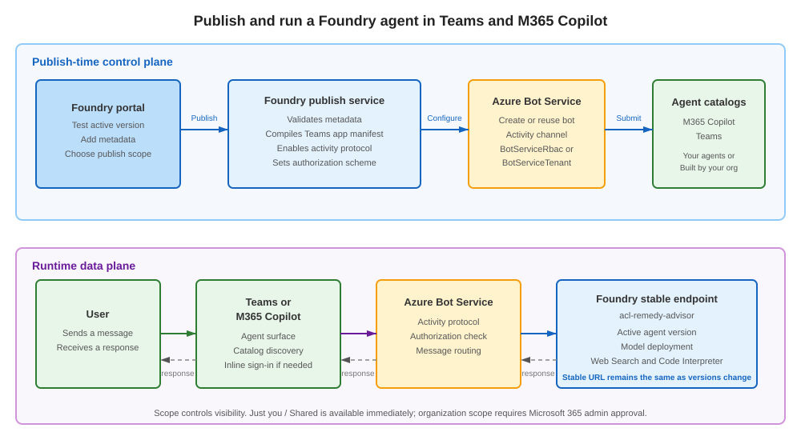
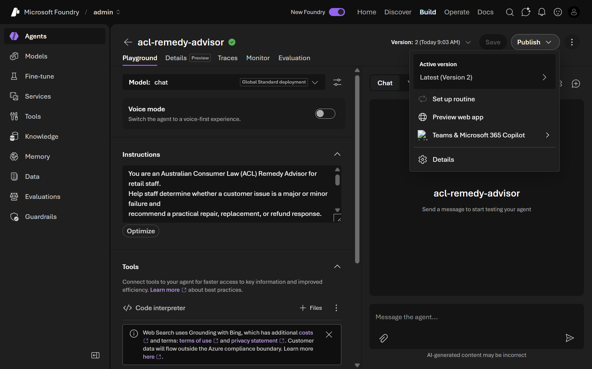
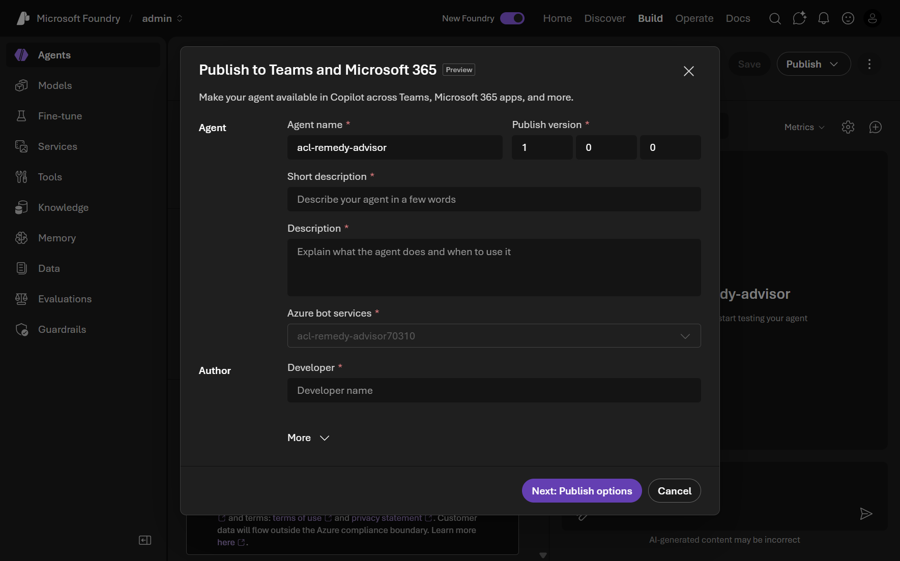
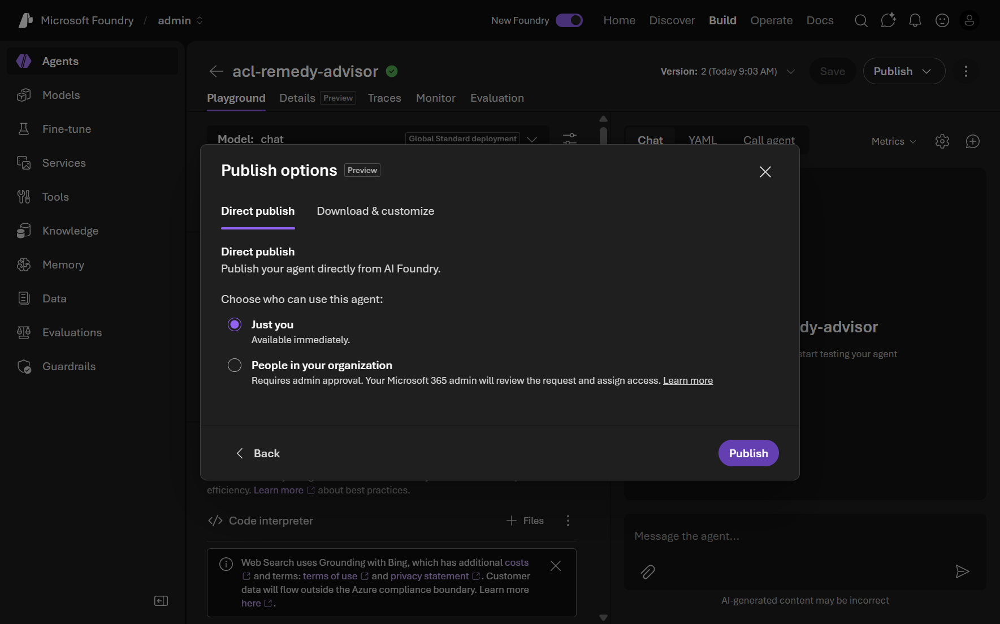
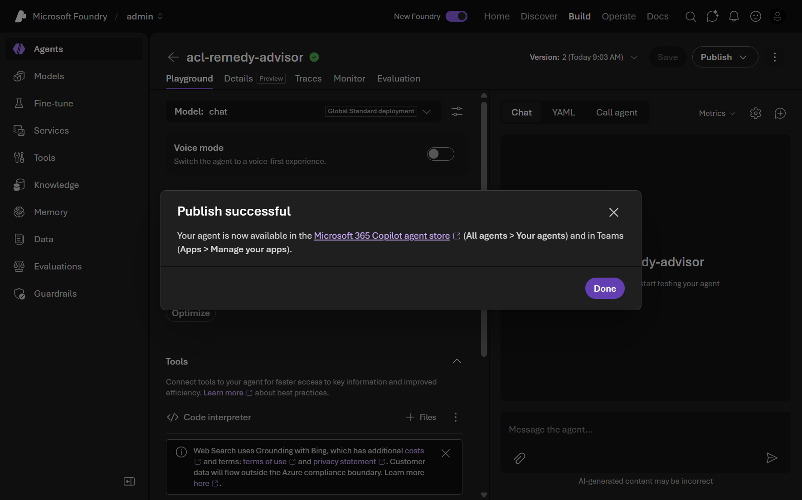
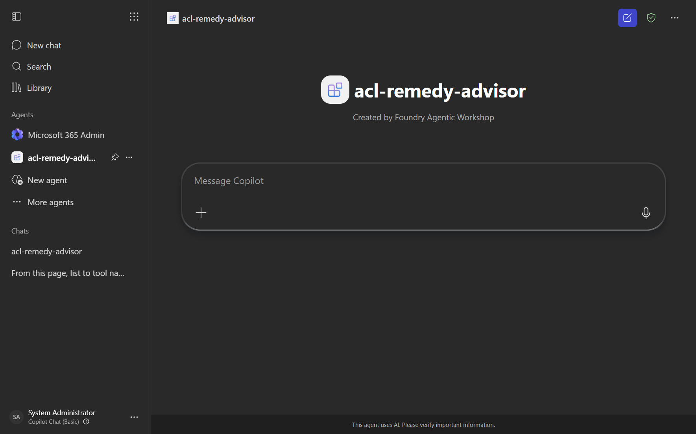
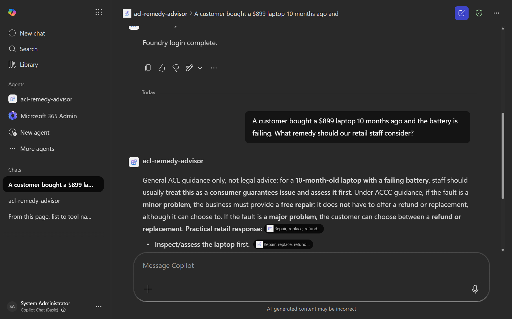

Publish an agent
This module is delivered in the Foundry portal. Where the original steps mention a pre-provisioned shared environment, a .env file, an organizer, or a proctor, use your own Foundry project and the model you deployed in Module 01.

This module requires the foundry-project-manager role or higher. Attendees assigned the foundry-user role cannot publish agents and will not be able to complete this module. Ask your Azure administrator to confirm your role before proceeding. Organizers: set AZURE_ATTENDEE_DEFAULT_ROLE=foundry-project-manager (the recommended default) or grant individual attendees the foundry-project-manager role.
Estimated time: 25 minutes
This module requires the foundry-project-manager role or higher. Attendees assigned the foundry-user role cannot publish agents and will not be able to complete this module. Ask your Azure administrator to confirm your role before proceeding. Organizers: set AZURE_ATTENDEE_DEFAULT_ROLE=foundry-project-manager (the recommended default) or grant individual attendees the foundry-project-manager role.
Tick the checkbox next to each step as you complete it to track your progress through this module.
Objectives
- Understand when and why agents are published.
- Publish the
acl-remedy-advisoragent to Microsoft 365 Copilot and Microsoft Teams. - Verify the published agent in Microsoft Teams and send it a test message.
- Understand the different paths for standard publishing, virtual-network publishing, and Microsoft Agent 365 autopilots.
Concepts
What publishing does
Publishing exposes the agent's stable endpoint to Microsoft 365 Copilot and Teams. Foundry creates or reuses an Azure Bot Service resource, enables the activity protocol, builds the Teams app package, and submits it to the Microsoft 365 and Teams agent catalogs.
The portal's Just you option is the safest choice for this workshop. It uses the Shared publish scope, makes the agent available immediately under Your agents, and does not require Microsoft 365 administrator approval. The People in your organization option uses the Tenant scope and requires an administrator to approve the request before the agent appears under Built by your org.
Publishing is an Early Access Preview. Do not include secrets, API keys, customer data, or other sensitive information in the agent's display metadata.
Virtual-network publishing
The portal flow in this module is for projects that can be reached through the standard public endpoint. If a Foundry project has public network access disabled and uses a private endpoint, the portal publishing flow is unavailable. The REST API publishing flow can publish the agent, but it also requires a publicly reachable entry point, TLS termination, DNS and routing, and carefully restricted inbound and outbound network traffic. This module mentions that path for architectural awareness; it does not configure or use it.
Microsoft Agent 365 autopilots
An autopilot is a separate Microsoft Agent 365 workflow for publishing a Hosted agent and submitting its agent blueprint for Microsoft 365 administrator approval. After approval, the agent can be registered and instantiated from Teams. The Microsoft Agent 365 autopilot workflow uses a different deployment and approval path, so this module does not create an autopilot. The normal publish request uses publishAsAutopilot: false.
Steps
Part 1 - Prepare the agent and permissions
1. Confirm the agent and Azure permissions
-
Sign in to Microsoft Foundry with the same account and tenant used by
az login. -
Confirm the
acl-remedy-advisoragent exists in the project and has a tested active version. If you skipped the earlier agent modules, runsolution/create_agent.pyfrom this module first. -
Confirm that the
Microsoft.BotServiceresource provider is registered in the subscription:az provider register --namespace Microsoft.BotService -
Confirm that your identity has permission to create and configure an Azure Bot Service resource in the target resource group. The Azure Bot Service Contributor role, Contributor, or Owner is sufficient.
2. Review the active version
- In Foundry, select Build, open
acl-remedy-advisor, and select Details. - In Agent configuration, review Active version. Select Edit if you need to select Always use latest or a specific tested version.
- Confirm the model, instructions, tools, and knowledge configuration are the version you intend to expose to Teams.
Part 2 - Publish from Foundry
3. Open the publishing flow
-
Select Publish, then select Teams and Microsoft 365 Copilot.
📸 Screenshot: Open the Teams and Microsoft 365 Copilot publish flow

-
Confirm that the Publish to Teams and Microsoft 365 dialog opens.
-
Confirm the Azure Bot Service resource is shown. Foundry creates it automatically when needed or displays the existing resource as read-only.
4. Complete the agent metadata
-
Enter the display metadata. Use values similar to these, changing the developer name to your own organization or name:
Field Value Name ACL Remedy AdvisorPublish version 1.0.0Short description Helps retail staff determine the right remedy for product problems under Australian Consumer Law.Description Provides practical, general guidance for retail staff about repairs, replacements, and refunds under Australian Consumer Law. It uses the configured agent tools and knowledge to support the recommendation.Developer Your name or organization name -
Expand More only if you have HTTPS URLs for a developer website, terms of use, or privacy statement. Do not enter placeholder URLs or sensitive information.
📸 Screenshot: Publish metadata form

-
Select Next: Publish options.
5. Choose the publish scope
-
Select the Direct publish tab.
-
Under Choose who can use this agent, select Just you.
-
Confirm that this choice corresponds to the
Sharedscope: the agent is immediately available to you under Your agents, and Microsoft 365 administrator approval is not required.📸 Screenshot: Direct publish with Just you selected

6. Publish the agent
-
Select Publish and wait for the confirmation dialog.
-
Confirm that Publish successful is displayed.
📸 Screenshot: Publish successful confirmation

Part 3 - Verify the agent in Microsoft Teams
7. Open the agent store
-
Open Microsoft Teams in your browser or desktop client and sign in to the tenant you are using for this workshop.
-
Open Apps and search for
ACL Remedy Advisor. -
Open the agent from Your agents. The Just you scope means other users will not see it in their agent stores.
📸 Screenshot: Agent in the Teams store

8. Send a test message
-
Start a new conversation with the agent.
-
Send this message:
A customer bought a $899 laptop 10 months ago and the battery is failing. What remedy should our retail staff consider? -
Confirm that the agent replies. A successful reply verifies the published channel can reach the agent and return its response.
-
If this is the first conversation for your account, the agent might first show an inline Open sign-in link message. Open the link and complete the Microsoft sign-in if prompted. Return to the conversation and wait for Foundry login complete before checking the final answer.
📸 Screenshot: Agent conversation in Teams

9. Understand updates and troubleshooting
- Note that changing the active agent version changes the version served through the stable published endpoint; you do not normally need to publish again for an agent version update.
- Note that changing the display name, descriptions, or URLs requires the Update agent Teams and Microsoft 365 Copilot display properties action from the Publish menu.
- If the agent does not appear immediately, refresh or reopen the store. Store results can be cached.
Validation
- The agent shows a published state after the publish action.
- You can locate the published agent's connection or consumption details.
- The Foundry dialog reports Publish successful.
- The agent appears under Your agents in Teams.
- The agent replies to the test message in a new Teams conversation.
- You can explain why the REST virtual-network flow and Microsoft Agent 365 autopilot flow are separate from this portal exercise.
Congratulations 🎉
You published an agent and located its connection and consumption details - the final step in taking an agent from idea to something real consumers can use. That completes the full end-to-end journey: setup, prompt and hosted agents, tools, MCP, Foundry IQ, the Agent Framework, Toolboxes, operations, and publishing. Outstanding work! 🚀
You published acl-remedy-advisor to Microsoft 365 Copilot and Teams and verified a live conversation. That completes the workshop journey from setup and agent construction through tools, knowledge, operations, and publishing.
You finished the workshop! → Back to the workshop overview Revisit any module from the overview, or take everything you've built into your own projects. No need to scroll - explore from here! [!TIP] Go further → Module 13: Build a custom engine agent Build an attendee-owned Microsoft 365 Agents SDK proxy that connects Teams to the Foundry agent. This optional module requires your own Azure subscription and Entra tenant.
Troubleshooting
| Symptom | Fix |
|---|---|
| Publish is unavailable | Confirm the project role is Foundry Project Manager or higher, and that the agent has a tested active version. |
| Azure Bot Service creation fails | Confirm the Microsoft.BotService provider is registered and your identity has Azure Bot Service Contributor, Contributor, or Owner on the resource group. |
| The agent does not appear in Teams | Confirm you used Just you, reopen or refresh the agent store, and allow time for catalog propagation. Organization scope requires administrator approval. |
| The agent appears but does not reply | Confirm the agent identity has access to every Azure resource used by its tools. Start a new conversation if the current conversation is stuck. |
NotImplementedException |
The starter file is intentionally a portal-only placeholder. Follow the README steps, or run the solution helper when you need to recreate the agent. |